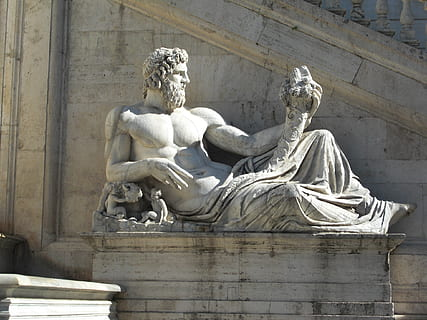

Mitología Griega
La mitología griega está llena de historias fascinantes sobre dioses y héroes. Algunos de los dioses más conocidos son Zeus, Atenea, y Apolo.
Por ejemplo, Zeus es el dios del cielo y el rey de los dioses, conocido por su poder y su influencia sobre el mundo mortal.
Introducción
La mitología griega es un conjunto de relatos, creencias y tradiciones transmitidas por los antiguos griegos a lo largo de los siglos. Estos mitos buscaban explicar la creación del mundo, el origen de los dioses y la naturaleza del universo, además de ofrecer enseñanzas morales y justificar costumbres y rituales. La mitología se convirtió en una parte fundamental de la identidad cultural griega, influyendo en su arte, literatura, religión y política.
Los mitos griegos comenzaron como narraciones orales transmitidas de generación en generación. Con el tiempo, fueron recopilados y registrados en diversas obras literarias, entre las que destacan los poemas épicos de Homero, "La Ilíada" y "La Odisea", así como "La Teogonía" y "Los Trabajos y los Días" de Hesíodo. Además de estos textos, las tragedias de Esquilo, Sófocles y Eurípides, así como las obras de historiadores como Heródoto y geógrafos como Pausanias, ayudaron a consolidar y difundir la mitología griega a lo largo de los siglos.
Orígenes y evolución de los mitos
La mitología griega tiene raíces en antiguas tradiciones indoeuropeas y comparte similitudes con los mitos de otras civilizaciones mediterráneas y mesopotámicas. En sus inicios, los mitos griegos eran relatos simples que explicaban fenómenos naturales como los rayos, el mar tempestuoso o la sucesión de las estaciones. Con el tiempo, estos relatos se expandieron y complejizaron, dando origen a una estructura mitológica rica en detalles, personajes y conexiones entre dioses, héroes y mortales.Uno de los aspectos más fascinantes de la mitología griega es su evolución a lo largo de los siglos. En sus primeras etapas, los relatos estaban profundamente ligados a las prácticas religiosas y a la adoración de los dioses en templos y santuarios. Sin embargo, con el desarrollo del pensamiento filosófico y el auge de la civilización griega, los mitos comenzaron a reinterpretarse desde un enfoque más racional y simbólico. Filósofos como Platón y Aristóteles debatieron sobre la veracidad de los mitos y su utilidad en la educación moral de los ciudadanos. Posteriormente, los romanos adoptarían y adaptarían muchos de estos mitos dentro de su propia cultura, fusionando elementos griegos con sus propias creencias.
El papel de los dioses y héroes en la sociedad griega
Los dioses desempeñaban un papel central en la vida cotidiana de los griegos. Eran vistos como seres poderosos pero con emociones y defectos humanos. Los griegos les ofrecían sacrificios, oraciones y festivales para ganarse su favor o evitar su ira. Cada ciudad-estado tenía una deidad principal como protectora, siendo Atenea la patrona de Atenas, Apolo de Delfos y Artemisa de Éfeso.Además de los dioses, los héroes desempeñaban un papel fundamental en la mitología griega. Eran figuras semidivinas, descendientes de dioses y mortales, cuyas hazañas y aventuras inspiraban a la sociedad. Historias como las de Heracles, Teseo, Perseo y Aquiles servían como ejemplos de coraje, astucia y sacrificio.
A lo largo del tiempo, la mitología griega influyó en innumerables aspectos de la civilización occidental. Sus relatos han sido fuente de inspiración para la literatura, la escultura, la pintura y el cine. Hoy en día, los mitos griegos siguen siendo estudiados y reinterpretados en la cultura popular, demostrando su impacto perdurable en la humanidad.
Principales Dioses y Diosas
Los dioses griegos eran antropomórficos y poseían características humanas, con virtudes y defectos. Entre los más importantes destacan:
Zeus: Dios del cielo y el trueno, rey del Olimpo. Hijo de Cronos y Rea, Zeus lideró la rebelión de los dioses olímpicos contra los titanes, liberando a sus hermanos y estableciendo su dominio en el Monte Olimpo. Es conocido por sus múltiples amoríos con diosas y mortales, lo que dio origen a numerosos semidioses como Heracles y Perseo. Su arma principal es el rayo, y es representado como un hombre maduro con barba y un cetro.
Hera: Diosa del matrimonio y la familia, esposa de Zeus. Aunque es la reina del Olimpo, su matrimonio con Zeus estuvo marcado por la infidelidad de su esposo, lo que la llevó a tomar venganza contra sus amantes y sus hijos ilegítimos. Era la protectora de las mujeres casadas y castigó duramente a figuras como Heracles y Leto. Su símbolo es el pavo real y es representada con una diadema y un cetro.
Poseidón: Dios del mar y los terremotos. Hermano de Zeus y Hades, Poseidón gobernaba los océanos desde su palacio submarino. Era una deidad temperamental, capaz de calmar o desatar tormentas. Creó al caballo y tuvo numerosos descendientes, incluyendo al cíclope Polifemo. Su símbolo es el tridente, con el que podía sacudir la tierra y crear terremotos.
Hades: Dios del inframundo y los muertos. A diferencia de su hermano Zeus, Hades no residía en el Olimpo, sino en el inframundo, donde gobernaba a las almas de los difuntos. Secuestró a Perséfone, lo que dio origen al mito de las estaciones. Aunque temido, no era considerado un dios maligno, sino justo en su papel de juez de los muertos. Su casco de invisibilidad, forjado por los cíclopes, le permitía moverse sin ser visto.
Atenea: Diosa de la sabiduría y la estrategia militar. Nació completamente armada de la cabeza de Zeus tras haber sido tragada por su padre en el vientre de Metis. Es una de las diosas vírgenes y protectora de Atenas, ciudad que lleva su nombre. Su símbolo es el búho y la égida, y era conocida por su apoyo a héroes como Odiseo y Perseo.
Apolo: Dios del sol, la música, la poesía y la profecía. Hijo de Zeus y Leto, su nacimiento fue complicado debido a la persecución de Hera. Como dios de la luz y la verdad, tenía el oráculo de Delfos, donde los mortales buscaban respuestas divinas. También era arquero y líder de las Musas. Se le representaba con una lira y una corona de laurel.
Artemisa: Diosa de la caza, la virginidad y la naturaleza salvaje. Hermana gemela de Apolo, Artemisa protegía a las criaturas del bosque y castigaba a quienes las dañaban. Fue una diosa vengativa, como lo demuestra su castigo a Acteón, quien la vio bañarse y fue transformado en ciervo. Se le representa con un arco y flechas.
Afrodita: Diosa del amor, la belleza y el deseo. Según una versión del mito, nació de la espuma del mar tras la castración de Urano. En otra, es hija de Zeus y Dione. Casada con Hefesto, tuvo numerosos amantes, entre ellos Ares y Adonis. Era la patrona del amor y la fertilidad y se le asociaba con la paloma y la concha marina.
Ares: Dios de la guerra y la violencia. Hijo de Zeus y Hera, Ares representaba la brutalidad del combate y el caos del campo de batalla. A diferencia de Atenea, que simbolizaba la estrategia militar, Ares encarnaba la destrucción y el derramamiento de sangre. Fue amante de Afrodita y tuvo varios hijos con ella. Se le representa con armadura y una lanza.
Dionisio: Dios del vino, la locura y el éxtasis. Hijo de Zeus y Sémele, su nacimiento fue trágico, ya que su madre murió al ver la verdadera forma de Zeus. Fue criado por ninfas y se convirtió en una deidad festiva, promoviendo el vino y los misterios dionisíacos. Se le representa con una copa de vino y una corona de hiedra.
Hermes: Mensajero de los dioses, protector de viajeros y comerciantes. Hijo de Zeus y Maya, Hermes era conocido por su astucia y rapidez. Fue el creador de la lira y ayudó a muchas figuras mitológicas, incluyendo a Perseo en su misión contra Medusa. Se le representa con sandalias aladas y un caduceo.
Criaturas y Seres Mitologicos
Los mitos griegos están llenos de seres fantásticos, como:Minotauro: Mitad hombre, mitad toro, habitante del laberinto de Creta.
Cíclopes: Gigantes de un solo ojo, forjadores de las armas divinas.
Medusa: Gorgona con serpientes en la cabeza, capaz de petrificar con la mirada.
Quimera: Criatura con cabeza de león, cuerpo de cabra y cola de serpiente.Hidra de Lerna: Serpiente de múltiples cabezas que se regeneraban al ser cortadas.
Pegaso: Caballo alado nacido de la sangre de Medusa.
Heroes y Leyendas
La mitología griega es una de las más influyentes de la historia, con relatos que explican el origen del mundo, la vida y la naturaleza humana. Basada en un vasto panteón de dioses olímpicos liderados por Zeus, estas historias fueron plasmadas en obras como la Ilíada y la Odisea. Los griegos creían en la intervención de los dioses en los asuntos humanos y en la existencia de criaturas legendarias, héroes épicos y relatos que dieron forma a su cosmovisión.
Mitos y Relatos
La mitología griega es una de las más influyentes de la historia, con relatos que explican el origen del mundo, la vida y la naturaleza humana. Basada en un vasto panteón de dioses olímpicos liderados por Zeus, estas historias fueron plasmadas en obras como la Ilíada y la Odisea. Los griegos creían en la intervención de los dioses en los asuntos humanos y en la existencia de criaturas legendarias, héroes épicos y relatos que dieron forma a su cosmovisión.
Simbolos y Artefactos Sagrados
La mitología griega es una de las más influyentes de la historia, con relatos que explican el origen del mundo, la vida y la naturaleza humana. Basada en un vasto panteón de dioses olímpicos liderados por Zeus, estas historias fueron plasmadas en obras como la Ilíada y la Odisea. Los griegos creían en la intervención de los dioses en los asuntos humanos y en la existencia de criaturas legendarias, héroes épicos y relatos que dieron forma a su cosmovisión.
Lugares Miticos y Cosmología
La mitología griega es una de las más influyentes de la historia, con relatos que explican el origen del mundo, la vida y la naturaleza humana. Basada en un vasto panteón de dioses olímpicos liderados por Zeus, estas historias fueron plasmadas en obras como la Ilíada y la Odisea. Los griegos creían en la intervención de los dioses en los asuntos humanos y en la existencia de criaturas legendarias, héroes épicos y relatos que dieron forma a su cosmovisión.